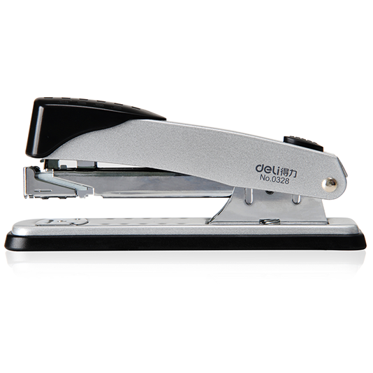

重型订书机
托展牌TZV-2系醇酯溶性PVC油墨，是我公司最新研发的新 一代环保型PVC油墨。印品具有极佳的耐磨性，耐冷冻性，良好 的附着力和耐热收缩性，本品主要以醇类和酯类作稀释溶剂，用 于矿泉水、饮料瓶、化妆品瓶、其他容器、干电池商标等印刷加工。
适用范围
适用于印刷PVC热收缩膜。
产品特性
- 1.白度好，色浓度高，油墨固含50%以上，耐稀释性好，墨质细腻。
- 2.耐水、耐冻性优良，滑性和热收缩性俱佳。
- 3.油墨所采用的溶剂环保且价格低廉，不会使PVC薄膜侵蚀或溶解。
- 4.适应于不同机速，印刷适应性好，转移效果优良。
注意事项
- 1.使用前请充分搅拌均匀，使油墨具有良好的流动性。
- 2.所使用的稀释溶剂不得加入过量的酮类溶剂，否则会使PVC收缩膜产生变形或断裂。
- 3.本产品保质期一年，本油墨不得与其它型号的油墨混合使用，以免影响印刷质量及性能。
- 4.本产品不能印刷软质和硬质PVC膜。